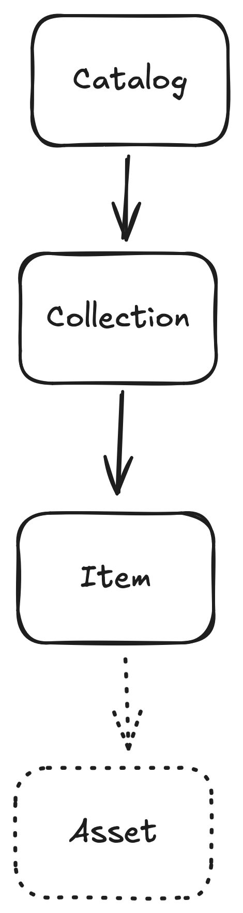
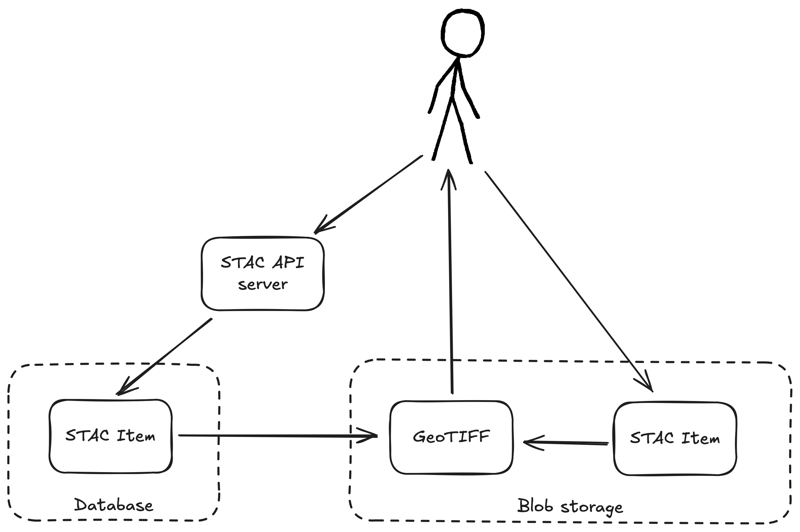
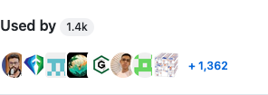

High-performance Python STAC tooling, backed by Rust

🐍 🤝 🦀
Pete Gadomski is a geospatial engineer at Development Seed
STAC
Usage
STAC's sweet spot is L1 to L2
— me
Issues
Original libraries (e.g. pystac) must move slowly
Building for
| data providers 👩🍳 | developers 💁♂️ | data users 😋 |
requires different strategies and methods
Sometimes (but not always) performance matters
$ curl -s https://landsatlook.usgs.gov/stac-server/search | jq .numberMatched
45955446
"Strategy"
- Build lots of small, bespoke libraries
- Stitch them together
- ...
- Don't profit?! (it's open source, after all)
stac-geoparquet
| Format | Size |
|---|---|
| json | 21.4 MB |
| parquet | 488.2 kB |
| parquet (compressed) | 178.8 kB |
1000 sentinel-2 items
stacrs
$ python -m pip install stacrs
items = stacrs.search(
"https://landsatlook.usgs.gov/stac-server",
collections="landsat-c2l2-sr",
intersects={"type": "Point", "coordinates": [-105.119, 40.173]},
sortby="-properties.datetime",
max_items=1000,
)
stacrs.write("items.parquet", items)
stacrs-cli
$ python -m pip install stacrs-cli
$ stacrs search https://landsatlook.usgs.gov/stac-server/search --max-items 1000 \
| stacrs translate - items.parquet
stac-fastapi-geoparquet
👷♂️
Coming March 2025...
cql2
we need more CQL2 STAC examples in the wild, feels very sparse - and not even clear on easy way for a user to know if said API supports CQL2
— Alex (@wildintellect.com) January 8, 2025 at 5:19 PM
cql2-rs
CLI
$ echo "(\"landsat:scene_id\" = 'LC82030282019133LGN00')" | cql2 -o json
{"op":"=","args":[{"property":"landsat:scene_id"},"LC82030282019133LGN00"]}
Python
from cql2 import Expr
expr = Expr("landsat:scene_id = 'LC82030282019133LGN00'")
print(expr.to_json())
print(expr.to_sql())
Implementations
| Backend | Supported? |
|---|---|
| Postgres (pgstac) | ✅ |
| Elasticsearch | ✅ |
| DuckDB | 👷 |
DuckDB
🦆
stacrs (again)
CLI
$ stacrs search items.parquet --max-items 1000
Python
from stacrs import DuckdbClient
client = DuckdbClient()
item_collection = client.search("items.parquet", ...)
STAC API search
"Lingua franca"
- Datetime(s)
- Geometry (or bbox)
- cql2
- sort
- fields
Putting it together

Rust and Python
🐍 🤝 🦀
Closing thoughts

Fin
Thank you for your time.